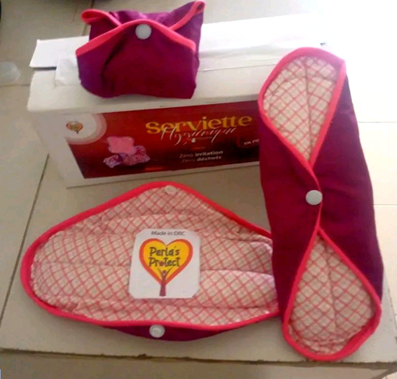

≡Articles récents: Santé hygiène de la femme
■Serviettes hygiéniques réutilisables sans additifs chimiques cancérigène, à base de tissus coton flanelle

« Le produit ( serviette hygienique) est actuellement sollicité chez plusieurs jeunes filles et femme a l'âge de procréer ainsi qu'aux organismes nationaux et internationaux a cause de son contexte écologiques, économique et protectrice contre les irritations et les infections urogenitales a répétition chez la femme. »
‣Marque: Serviette hygiénique Réutilisables
Perla's Design est une platerforme d'imagination,
de création et des ventes des produits a réflexion
scientifique qui touchent le quotidien de l'Homme en général,
plus particulierement celui de l'enfant et la femme
Perlas protect SHL est une marque de serviette hygiénique de bonne qualité, elle n’irrite pas la femme, elle lui procure un bien être de très longue durée, elle protège sa flore et lui évite de pouvoir être victime d’un cancer du col utérin, grâce à sa composition la serviettes hygiéniques réutilisables sans additifs chimiques cancérigène, fait à base de tissus coton produit à grand échelle, avec des machines de hautes définitions, avec un personnel qualifié.
car tant que la femme existera, perlas protect existera et lui servira.
Noëlla KIZUBANATA - 10/11/2024
À propos
 Mme Noëlla KIZUBANATA/ BIOLOGISTE
Mme Noëlla KIZUBANATA/ BIOLOGISTEC.E.O
Détentrice d'un diplome de biologie moléculaire, est chargée du laboratoire de travaux pratique de la faculté de Médecine de l'Université William Booth et elle est aussi membre du comité dirigeante chargé des questions sur la santé sexuelle et reproductive de la nouvelle plate forme U-repport/Unicef/fille/Kinshasa